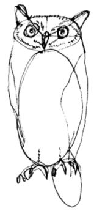

Сервис по поиску домашних животных
Контакты
Статьи
Главная

Заполните информацию о пропавшем питомце
1. Вы потеряли или нашли питомца?
Потерял(а)
Нашёл(-ла)
2. У меня:
Кошка
Собака
3. Выберите город:
Не выбран
Тула
Заокский
4. Выберите дату:
(в браузере Safari записывать в виде ГГГГ-ММ-ДД)
5. Загрузите фотографии (чем больше - тем лучше):
Для выбора нескольких фото удерживайте клавишу
Ctrl
.
6. Окрас животного:
7. Приметы, прочая информация:
Обработка занимает в среднем 10 минут при скорости соединения 10 мбайт/с.